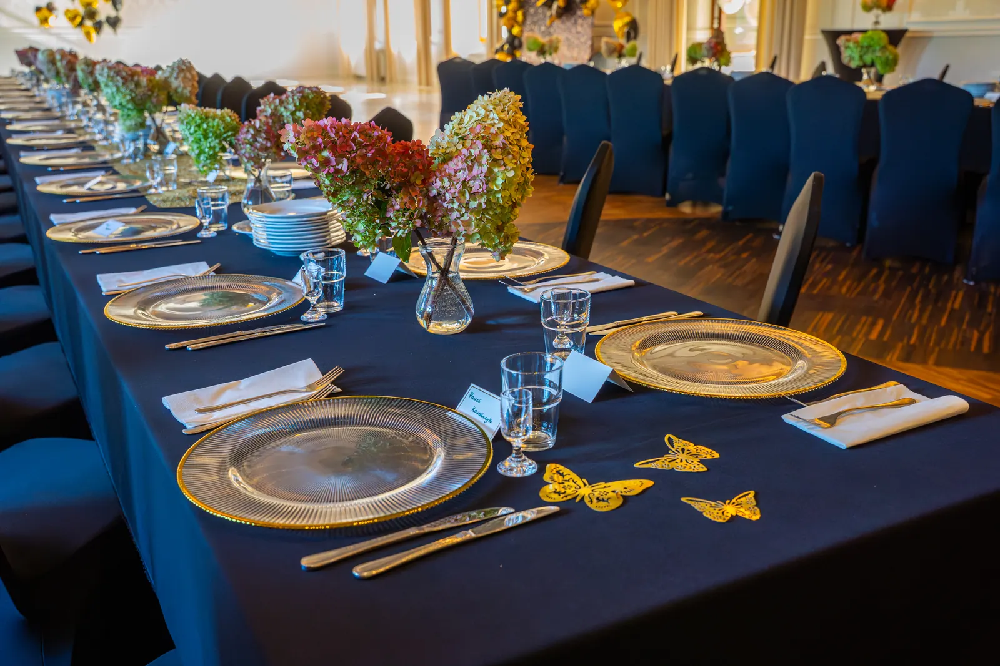
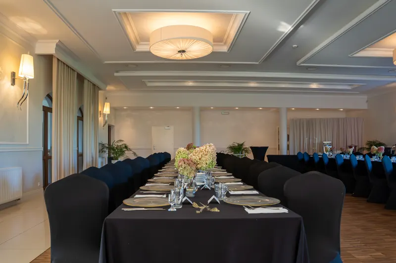

Wesela i rodzinne uroczystości
Sale do 200 gości, kuchnia na miejscu i 23 pokoje dla gości, którzy zostają na noc.
Manager przyjęć: 784 043 570

Planer przyjęcia
Wybierz okazję, liczbę gości i datę. Planer podpowie salę, a zapytanie z tymi danymi trafi do osoby, która zajmuje się przyjęciami: 784 043 570, k.wieczorek@potockidwor.pl.
Imprezy okolicznościowe w Potockim Dworze
Wyjątkowe chwile zasługują na wyjątkową oprawę.
W Potockim Dworze organizujemy przyjęcia, które na długo pozostają w pamięci. Urodziny, chrzciny, wesela, jubileusze, spotkania rodzinne i inne uroczystości - każde wydarzenie traktujemy indywidualnie, dbając o najmniejsze detale i niepowtarzalną atmosferę.
Oferujemy szerokie możliwości aranżacji naszych sal, dopasowując ich wystrój do charakteru uroczystości i oczekiwań Gości. Dysponujemy różnymi rodzajami stołów i wariantami ich ustawienia, eleganckimi obrusami, zastawą stołową oraz pokrowcami na krzesła.
Dekoracje przygotowujemy samodzielnie lub we współpracy z profesjonalnymi dekoratorami, tworząc przestrzeń idealnie dopasowaną do Państwa wizji.
Dopełnieniem każdej uroczystości jest nasza kuchnia, w której przygotowujemy menu dostosowane do indywidualnych preferencji i charakteru spotkania.
Państwa okazja, Państwa wizja, nasza troska o każdy szczegół. Zapraszamy do kontaktu - wspólnie stworzymy przyjęcie dokładnie takie, jakiego Państwo oczekują.

Sale
Każda sala jest klimatyzowana i ma dostęp do światła dziennego.
| Sala | Liczba gości | Na przyjęcia | Opis |
|---|---|---|---|
| Sala Balowa | do 200 osób | standardowo | Największa z naszych przestrzeni, łącząca stylowy, elegancki wystrój z nowoczesną funkcjonalnością. Parkiet do tańca i dowolny układ stołów. |
| Sala Bankietowa | do 30 osób | standardowo | Kameralna sala na mniejsze uroczystości rodzinne, które wymagają prywatności i spokoju. |
| Sala Restauracyjna | do 50 osób | po indywidualnych ustaleniach | Na przyjęcie w sali restauracji. |
| Patio | do 35 osób | po indywidualnych ustaleniach | Jasna sala z dużymi przeszkleniami. |
Kuchnia na przyjęcie
- Kolacje serwowane: eleganckie, wielodaniowe menu dopasowane do jubileuszy i uroczystości.
- Tematyczne bufety i stoły biesiadne: dania ciepłe i zimne przekąski, od tradycyjnych smaków po finger food.
- Menu dedykowane z uwzględnieniem preferencji gości: wegetariańskie, wegańskie, bezglutenowe.
Galeria
Noclegi dla gości
23 pokoje ze śniadaniem w cenie. Goście z daleka nie muszą szukać noclegu ani transportu po przyjęciu.
Pokoje